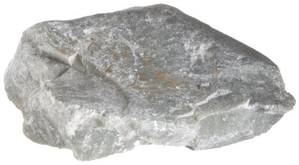
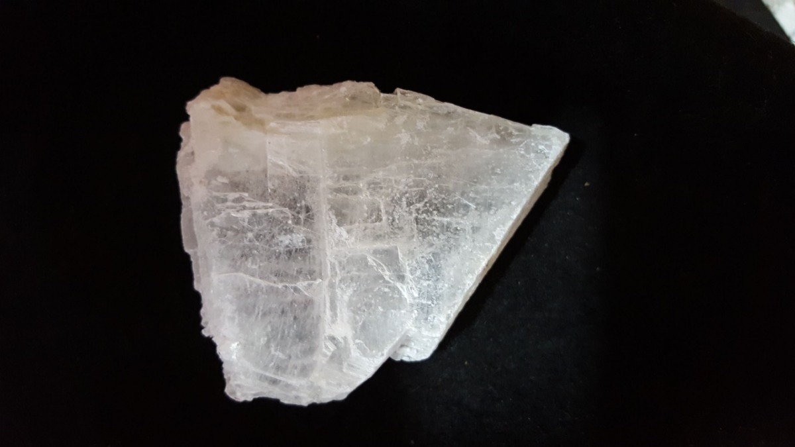
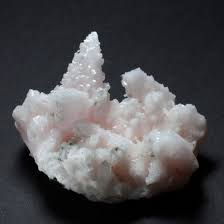
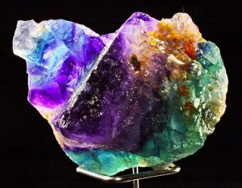
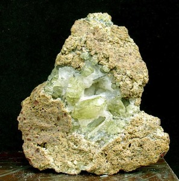
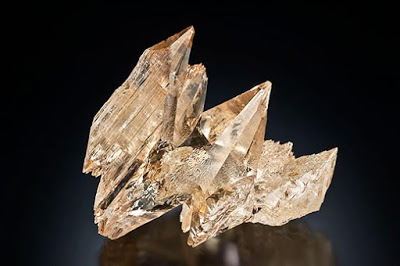

Tabla de dureza de Mohs
| Dureza | | Mineral | Se raya con/raya a | Composición química |
| 1 |
 | Talco | Se puede rayar fácilmente con la uña | Mg3Si4O10(OH)2 |
| 2 |
 | Yeso | Se puede rayar con la uña con más dificultad | CaSO4·2H2O |
| 3 |
 | Calcita | Se puede rayar con una moneda de cobre | CaCO3 |
| 4 |  | Fluorita | Se puede rayar con un cuchillo de acero | CaF2 |
| 5 |  | Apatito | Se puede rayar difícilmente con un cuchillo | Ca5(PO4)3(OH-,Cl-,F-)l |
| 6 |  | Ortosa | Se puede rayar con una lija para el acero | KAlSi3O8 |
| 7 |  | Cuarzo | Raya el vidrio | SiO2 |
| 8 |  | Topacio | Rayado por herramientas de carburo de wolframio | Al2SiO4(OH-,F-)2 |
| 9 |  | Corindón | Rayado por herramientas de carburo de silicio | AI2O3 |
| 10 |  | Diamante | El material más duro en esta escala (rayado por otro diamante) | C |